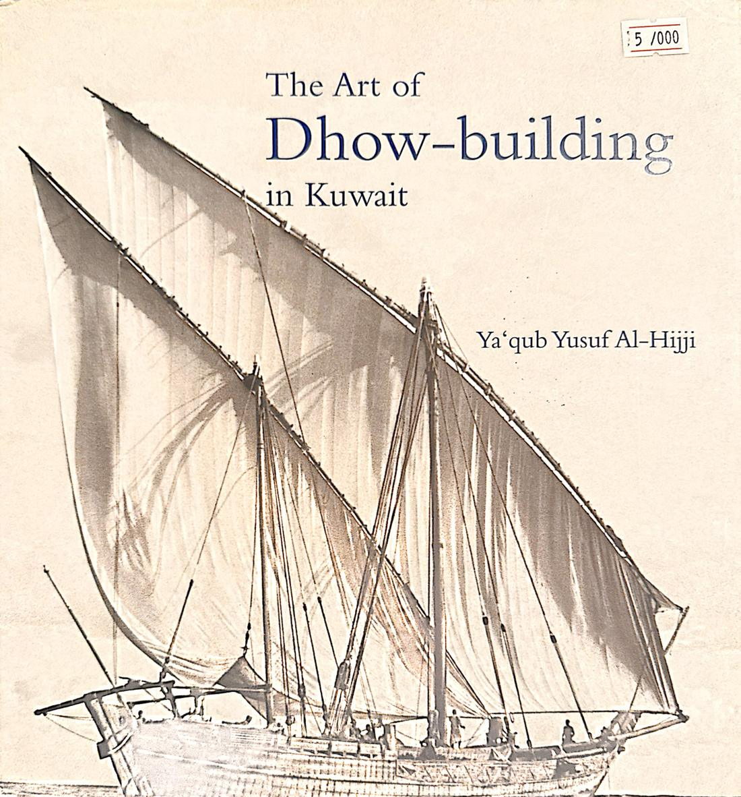
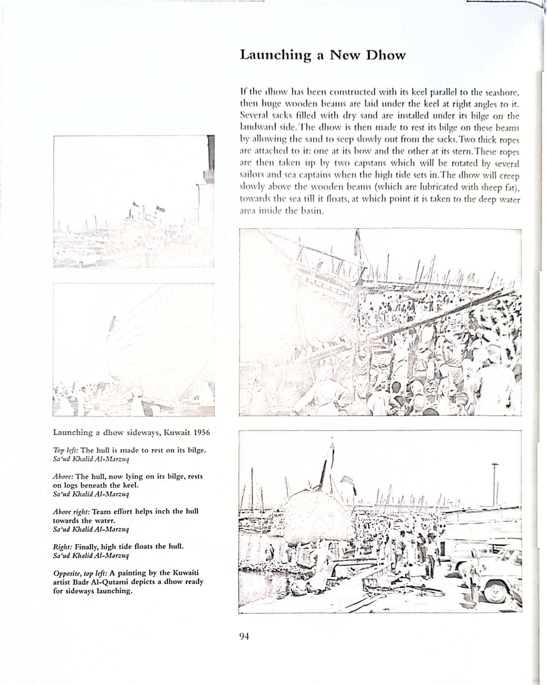

كتاب منشور · الغلاف والصفحات ٩٤ و١١٤ و١١٦ ومن ١١٨ إلى ١٢٥
كتاب «فن بناء السفن في الكويت» للدكتور يعقوب الحجي: البدري والداو وسمحان
ما هي
يروي فصل د. الحجي عن أشهر السفن الكويتية تاريخ ثلاث من سفن العائلة. فالبدري بناها الأستاد محمد أكروف نحو ١٨٨٠، وكانت مدرسة عبدالوهاب القطامي وأبنائه البحرية، وبيعت في عدن في ١٤ ديسمبر ١٩٤١. والداو بُني سنة ١٩١٤ لحمد الصقر، وقاده عبدالوهاب القطامي، وانتهى مدفونا تحت ردم ميناء كراتشي. وسمحان بناه الحاج سلمان سنة ١٩١٧، وقاده عبدالوهاب ويوسف ابنا عيسى. وفي الصفحات صورة بدر بالزي البحري، وصورة عبدالوهاب بن عيسى وشهادة الملاحة التي نالها ١٩٣٨، وصور فاليرز.
أهميتها
أوفى تاريخ منشور لسفن العائلة.
صور الصفحات


ملاحظات
يكتب الحجي اسم باني البدري «Grouf»، ويذكره بوعركي باسم أكروف. نعرض هنا الصفحات الأولى فقط، ويرى أفراد العائلة بعد تسجيل الدخول كل الصفحات وعددها 11.
أسماء أخرى
المصادر
يعقوب يوسف الحجي، فن بناء السفن في الكويت، بالصفحات المبينة.
كيف كُتب هذا النص: صفحات من كتاب منشور.
افتح في الموقع التفاعلي